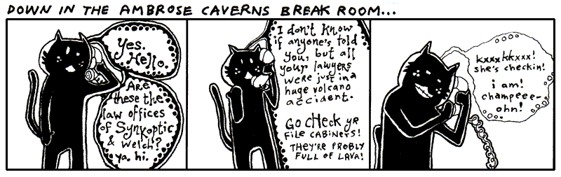
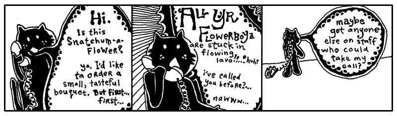

I’ve never seen the ham do anything but leak juice. Today, our business in Ambrose Caverns is with the elf. He is a crucial part of the next lessons. Let’s all make him feel welcome. Go start warming up your listening hats! (And please change out of those ridiculous stirrup pants.)
A prompt warning: this lesson is much slower. Stay with it. This will be a long, deep breath. The most crucial stage of your instruction. It may seem like you’re not learning much code at first. You will be learning concepts. By the end of this chapter, you will know Ruby’s beauty. The coziness of the code will become a down sleeping bag for your own solace.
1. The Leaf as a Status Symbol in Ambrose
Alright, Elf. Give us a quick rundown of the currency issues you’ve faced there in your kingdom.
Yeah, that’s not the way I remember it. This Elf was paging me constantly. When I refused to call him back, he somehow left a message on my pager. Meaning: it beeped a couple times and then printed out a small slip of paper. The slip said something to the effect of, “Get down here quick!” and also, “We’ve got to rid the earth of this scourge of entrepreneurial caterpillars, these twisted insect vikings are suffocating my blue crystals!”
Lately, the exchange rate has settled down between leaves and crystals. One tree-grown note is worth five crystals. So the basic money situation looks like this:
blue_crystal = 1
leaf_tender = 5
This example is, like, totally last chapter. Still. It’s a start. We’re setting two variables. The equals sign is used for assignment.
Now leaf_tender represents the number 5 (as in: five blue crystals.) This
concept right here is half of Ruby. We’re defining. We’re creating. This
is half of the work. Assignment is the most basic form of defining.
You can’t complain though, can you Elf? You’ve built an empire from cashing your blue crystals into the new free market among the forest creatures. (And even though he’s an elf to us, he’s a tall monster to them.)

Nonono. Hang on a sec. You’re not ready for what the Elf here is doing in his caves. You’ll think it’s all positively inhumane, naughty, sick, tweeested, yada yada.
Now You’re Going to Hear the Animal Perfect Mission Statement Because This Is A Book And We Have Time And No Rush, Right?
Back, back, way back before speedboats, I owned a prize race horse who took a stumble on the track. She did ten front flips and crashed into a guy who was carrying a full jar of mayonnaisse. We had blood and mayonnaisse up and down the track. Needless to say, she was a disaster.
The vet took one look at her and swore she’d never walk again. Her legs were gone and the vet wouldn’t allow a legless horse to just sit around. We’d need to put her down. He swore his life and career on it, insisting we divide into two parallel lines. The people who could not refute the doctor’s claims on one side; those too stubborn to accept his infallable medical reasoning on the other. The Elf, his pet ham, and I were the only ones in that second line.
So while the others heaped up trophies and great wreaths around the horse, bidding it a fond farewell before the bullet came to take him home, the Elf and I frantically pawed the Internet for answers. We took matter into our own hands, cauterizing her leg wounds with live crawdads. It worked great! We now had a horse again. Or at least: a horse body with a crustaceous abdominal frosting.
She scurried everywhere after that and lived for years in pleasantly moist underground cavities.
Animal Perfect is now the future of animal enhancement. They build new animals and salvage old-style animals for parts. Of course, they’ve come a long ways. When Animal Perfect started, you’d see a full-grown bear walk into Animal Perfect and you’d see a full-grown bear with sunglasses walk out. Completely cheesy.
Stick around and you’ll see a crab with his own jet pack. That’s a new 2004 model jetcrab.
But now, the whole operation is up and running. And the cleanliness of the place is astonishing. All the equipment is so shiny. Everything is in chrome. Oh, and all the staff have concealed weapons. They’re trained to kill anyone who enters unannounced. Or, if they run out of bullets, they’re trained to pistol whip anyone who enters unannounced.
Elf, make me a starmonkey.
Some imaginary Ruby for you:
pipe.catch_a_star
Variable pipe. Method catch_a_star. A lot of Rubyists like to think of
methods as a message. Whatever comes before the dot is handed the message. The
above code tells the pipe to catch_a_star.
This is the second half of Ruby. Putting things in motion. These things you define and create in the first half start to act in the second half.
- Defining things.
- Putting those things into action.
So what if the star catching code works? Where does the star go?
captive_star = pipe.catch_a_star
See, it’s up to you to collect the miserable, little star. If you don’t, it’ll simply vanish. Whenever you use a method, you’ll always be given something back. You can ignore it or use it.
If you can learn to use the answers that methods give you back, then you will dominate.

Quickly then.
starmonkey = ratchet.attach( captive_monkey, captive_star )
The ratchet gets an attach message. What needs to be attached? The method
arguments: the captive_monkey and the captive_star. We are given back a
starmonkey, which we have decided to hang on to.
This is turning out to be such a short, little proggie that I’m just going to put it all together as one statement.
starmonkey = ratchet.attach( captive_monkey, pipe.catch_a_star ) + deco_hand_frog
See how pipe.catch_a_star is right in the arguments for the method? The caught
star will get passed right to the ratchet. No need to find a place to put it.
Just let it go.
2. Small and Nearly Worthless

The hotel here in Ambrose is no good at all. The beds are all lumpy. The elevator is tiny. One guy put all his bags in the elevator and found out there wasn’t room for him. He hit the button and chased up the stairs after it all. But the stairwell turned out to be too narrow and his shoulders got wedged going up.
The soap mini-bars they give you are sized down for elves, so it’s impossible to work up a lather. I hate it. I keep mistaking them for contact lenses.
I turned on the faucet and nothing came out. Thing is: Ambrose is a place with magical properties, so I took a chance. I put my hands under the spigot. Invisible, warm wetness. I felt the hurried sensation of running water, darting through my fingers. When I took my hands away, they were dry and clean.
It was an amazing nothingness to experience. It was just like nil.
Nil
In Ruby, nil represents an emptiness. It is without value. It isn’t zero.
Zero is a number.
It’s Ruby’s own walking dead, a flatlined keyword. You can’t add to it, it doesn’t evolve. But it’s terribly popular. This skeleton’s smiling in all the pictures.
plastic_cup = nil
The above plastic_cup is empty. You could argue that the plastic_cup
contains something, a nil. The nil represents the emptiness, though, so go
ahead and call it empty.
Some of you who have programmed before will be tempted to say the plastic_cup
is undefined. How about let’s not. When you say a variable is undefined,
you’re saying that Ruby simply has no recollection of the variable, it doesn’t
know the var, it’s absolutely non-existent.
But Ruby is aware of the plastic_cup. Ruby can easily look in the
plastic_cup. It’s empty, but not undefined.
False

The cat Trady Blix. Frozen in emptiness. Immaculate whiskers rigid. Placid eyes of lake. Tail of warm icicle. Sponsored by a Very Powerful Pause Button.
The darkness surrounding Blix can be called negative space. Hang on to that
phrase. Let it suggest that the emptiness has a negative connotation. In a
similar way, nil has a slightly sour note that it whistles.
Generally speaking, everything in Ruby has a positive charge to it. This
spark flows through strings, numbers, regexps, all of it. Only two keywords wear
a shady cloak: nil and false draggin’ us down.
You can test that charge with an if keyword. It looks very much like the
do blocks we saw in the last chapter, in that both end with an end.
if plastic_cup
print "Plastic cup is on the up 'n' up!"
end
If plastic_cup contains either nil or false, you won’t see anything print
to the screen. They’re not on the if guest list. So if isn’t going to run
any of the code it’s protecting.
But nil and false need not walk away in shame. They may be of questionable
character, but unless runs a smaller establishment that caters to the
bedraggled. The unless keyword has a policy of only allowing those with a
negative charge in. Who are: nil and false.
unless plastic_cup
print "Plastic cup is on the down low."
end
You can also use if and unless at the end of a single line of code, if
that’s all that is being protected.
print "Yeah, plastic cup is up again!" if plastic_cup
print "Hardly. It's down." unless plastic_cup
And another nice trick: stack the if and unless.
print "We're using plastic 'cause we don't have glass." if plastic_cup unless glass_cup
This trick is a gorgeous way of expressing, Do this only if a is true and b isn’t true.
Now that you’ve met false, I’m sure you can see what’s on next.
True
approaching_guy = true
I saw true at the hotel buffet tables today. I cannot stand that guy. His
stance is way too wide. And you’ve never met anyone who planted his feet so hard
in the ground. He wears this corny necklace made out of shells. His face exudes
this brash confidence. (You can tell he’s exerting all of his restraint just to
keep from bursting into Neo flight.)
To be honest, I can’t be around someone who always has to be right. This true
is always saying, “A-OK.” Flashing hang ten. And seriously, he loves that
necklace. Wears it constantly.
As you’d suspect, he’s backstage at everything on the if event schedule.
print "Hugo Boss" if true acts like print "Hugo Boss".
Occassionally, if will haul out the velvet ropes to exercise some crowd
control. The double equals gives the appearance of a short link of ropes,
right along the sides of a red carpet where only true can be admitted.
if approaching_guy == true
print "That necklace is classic."
end
The double equals is simply an ID check. Do the gentleman at both ends of this rope appear to match?
In this way, you control who if lets in. If you have a hard time getting along
with true as I do, you can heartily welcome false.
if approaching_guy == false
print "Get in here, you conniving devil."
end
Same goes for unless. The gateway is yours. Take possession of it.
Again, I Want You to Dominate
Now, you want a head trip? The double equals sign is a method. Can you guess how it works? Here, check it out with the dot and parens:
approaching_guy.==( true )
Ruby allows the shortcut, though. You can drop the dot and back away slowly.
Now, do you remember what you need to do to dominate in Ruby? Use the answers the methods give you.
if nil.==( true )
print "This will never see realization."
end
In the above, how is the method’s answer being used?
Let’s take the statement nil.==(true). This will fail every time. No match. When
there’s no match, the double equals method answers with false. A shake of the
head. That answer is given to if, who can’t accept a false. The print
never sees realization.
at_hotel = true
email = if at_hotel
"why@hotelambrose.com"
else
"why@drnhowardcham.com"
end
Even though if isn’t a method, if does give a return answer. Look at the
above and wonder over what happens when at_hotel is true.
The if will return the answer given by the code it chooses to run. In the case
of at_hotel being true, the first string, my e-mail address at Hotel Ambrose,
will be returned. The else keyword marks code which will run, should if
fail. If at_hotel is false, the if will answer with my e-mail address at Dr.
N. Howard Cham’s office, where I take my apprenticeship.
Should you have several lines of code in an if or unless, only the answer
from the last full statement will be used.
email = if at_hotel
address = "why"
address << "@hotelambrose"
address << ".com"
end
Three lines of code inside the if. The first line assigns a string with my
name in it to a variable. The second and third lines add the rest of my e-mail
address on to the end. The double less-than << is the concatenation
operator. To concatenate is to append, or add to the end.
Just as we saw with the equality checker ==, the concatenator is a method.
After adding to the end of the string, the concatenator also answers with that
very string. So, the third line, which could be read as address.<<( ".com"
), gives back address, which the if then hands back for email’s
assignment.
Here’s a question: what if the if fails? What if at_hotel is false in the
above example? Is anything returned? Nothing is assigned to email, right?
Yes, nothing is returned. By which I mean: nil is returned. And often nil is
a very useful answer.
print( if at_hotel.nil?
"No clue if he's in the hotel."
elsif at_hotel == true
"Definitely in."
elsif at_hotel == false
"He's out."
else
"The system is on the freee-itz."
end )
You can use the nil? method on any value in Ruby. Again, think of it as a
message. To the value: “Are you nil? Are you empty?”
If at_hotel is empty, Ruby doesn’t have any idea if I’m in the hotel or not.
So if answers with the “No clue” string. In order to handle the true or
false possibilities, the elsif keyword is used. While you can have only one
if and one else, you can fill the in-between with an exorbitant number of
elsif keywords. Each elsif acts as a further if test. Checking for a
positive charge.
If you’re doing okay at this point, then you’re in tip-top shape for the rest of the book. You have seen some pretty tough code in the last few examples. You strong fellow.
3. Chaining Delusions Together
You finish reading the above comic and retire to your daybed for reflection. It’s one of those canopy affairs which is always logjammed with pillows. You sit atop the pile, gazing out upon the world. You see the tall smokestacks belching wide spools of fume and haze. The tangled concourses of freeways smattered with swift, shimmering traffic is but a gently pulsing eye muscle from your vantage point.
It is all so fantastic. How the colors of the horizon spread across the landscape as a great mix of butter and grease with a tablespoon of vanilla extract.
Yet, for all of the beauty which beckons for your attention, the images of the Elf and his Olympic Hopeful return. And more especially, that order for 55,000 starmonkeys. 55,000 starmonkeys, you think. Fifty-five Thousand.
You think of just the number itself. 55,000. It’s walking down a road. It might be in a forest, you don’t know for sure as your eyes are fixed right on the number itself. It’s stopping and talking to people. To tennis players, to a men’s choral group. There is merriment and good feeling. When it laughs, its lower zeros quiver with glee.
You want to talk to it. You want to skip along that forest trail with it. You want to climb aboard a jet bound to Brazil with it. And after five days and four nights at the leisureful Costa do Sauipe Marriott Resort & Spa, to marry it, to bear a family of 55,000 starmonkeys with it. To take possession of Nigeria with it.
With a flying leap, you dismount your pillow tower of isolation. Scrambling with the key, you unlock your roll top desk and pull out a sheet of paper, holding it firmly upon the desk. You begin scribbling.
Take possession of Nigeria with my new 55,000 starmonkeys… Over it, build Nigeria-sized vegetarians only casino and go-cart arena… Wings… we could have our own special sauce on the wings that’s different… Mustard + codeine = Smotchkkiss’ Starry Starmonkey Glow Sauce… Franchise, franchise… logos… Employee instructional videos… When you give the customer change, let them reach inside the frog on your hand to get it… If they have no change, at least put their reciept some place where they have to touch the frog… We’re leveling the playing field here… Advertise cheap pizza, let’s make our money off soda… Collect all 4 frosted glasses…
Wow, the ideas are really coming out. You literally had to smack yourself to stop. We need to put these in a safe place. Actually, we should store them on your computer and mangle the words. You look out the window and watch for FBI. I’m going to start this script.
The Flipping Script
print "Type and be diabolical: "
idea_backwards = gets.reverse
Let this script be your confidante. It will ask for evil plans and turn their
letters backwards. The gets method is built into Ruby. It’s a kernel
method like print. This method gets will pause Ruby to let you type. When
you hit Enter, gets will then stop paying attention to your keyboard
punchings and answer back to Ruby with a string that contains everything you
typed.
The reverse method is then used on the string that gets is giving back. The
reverse method is part of the String class. Which means that anything
which is a string has the reverse method available. More on classes in the
next chapter, for now just know that a lot of methods are only available with
certain types of values.
I don’t think reverse is going to cut it. The authorities only need to put a
mirror to “airegiN fo noissessop ekaT.” Bust us when starmonkeys start to touch
down in Lagos.
The capital letters give it away. Maybe if we uppercase all letters in the string before we reverse it.
idea_backwards = gets.upcase.reverse
Your Repetitiveness Pays Off
You hand me a legal pad, doused in illegible shorthand. Scanning over it, I start to notice patterns. That you seem to use the same set of words repeatedly in your musings. Words like starmonkey, Nigeria, firebomb. Some phrases even. Put the kabosh on. That gets said a lot.
Let us disguise these foul terms, my brother. Let us obscure them from itching eyes that cry to know our delicate schemes and to thwart us from having great pleasure and many go-carts. We will replace them with the most innocent language. New words with secret meaning.
I start up a word list, a Ruby Hash, which contains these oft seen and
dangerous words of yours. In the Hash, each dangerous word is matched up against
a code word (or phrase). The code word will be swapped in for the real word.
code_words = {
'starmonkeys' => 'Phil and Pete, those prickly chancellors of the New Reich',
'catapult' => 'chucky go-go', 'firebomb' => 'Heat-Assisted Living',
'Nigeria' => "Ny and Jerry's Dry Cleaning (with Donuts)",
'Put the kabosh on' => 'Put the cable box on'
}
The words which are placed before the arrow are called keys. The words after the arrows, the definitions, are often just called values.
Notice the double quotes around Ny and Jerry's Dry Cleaning (with Donuts).
Since a single quote is being used as an apostrophe, we can’t use single quotes
around the string. (Although, you can use single quotes if you put a backslash
before the apostrophe such as: 'Ny and Jerry\'s Dry Cleaning (with Donuts)'.)
Should you need to look up a specific word, you can do so by using the square brackets method.
code_words['catapult'] will answer with the string 'chucky go-go'.
Look at the square brackets as if they are a wooden pallet the word is sitting upon. A forklift could slide its prongs into each side of the pallet and bring it down from a shelf back in the warehouse. The word on the pallet is called the index. We are asking the forklift to find the index for us and bring back its corresponding value.
If you’ve never been to a warehouse, you could also look at the brackets as handles. Imagine an industrious worker putting on his work gloves and hefting the index back to your custody. If you’ve never used handles before, then I’m giving you about thirty seconds to find a handle and use it before I blow my lid.
As with many of the other operators you’ve seen recently, the index brackets are simply a shortcut for a method.
code_words.[]( 'catapult' ) will answer with the string 'chucky go-go'.
Making the Swap
I went ahead and saved the Hash of code words to a file called wordlist.rb.
require 'wordlist'
# Get evil idea and swap in code words
print "Enter your new idea: "
idea = gets
code_words.each do |real, code|
idea.gsub!( real, code )
end
# Save the jibberish to a new file
print "File encoded. Please enter a name for this idea: "
idea_name = gets.strip
File::open( "idea-" + idea_name + ".txt", "w" ) do |f|
f << idea
end
Script starts by pulling in our word list. Like gets and print, the
require method is a kernel method, you can use it anywhere. I give it the
string 'wordlist' and it will look for a file named wordlist.rb.
After that, there are two sections. I am marking these sections with comments, the lines that start with pound symbols. Comments are useful notes that accompany your code. Folks who come wandering through your code will appreciate the help. When going through your own code after some time has passed, comments will help you get back into your mindset. And there’s software out there that can take your comments and build documents from them. (RDoc and Ri—see Expansion Pak #1!)
I like comments because I can skim a big pile of code and spot the highlights.
As the comments tell us, the first section asks you for your evil idea and swaps in the new code words. The second section saves the encoded idea into a new text file.
code_words.each do |real, code|
idea.gsub!( real, code )
end
You see the each method? The each method is all over in Ruby. It’s available
for Arrays, Hashes, even Strings. Here, our code_words dictionary is kept in a
Hash. This each method will hurry through all the pairs of the Hash, one
dangerous word matched with its code word, handing each pair to the gsub!
method for the actual replacement.
In Ruby, gsub is short for global substitution. The method is used to search
and replace. Here, we want to find all the occurrences of a dangerous word and
replace with its safe code word. With gsub, you provide the word to find as
the first argument, then the word to put in its place as the second
argument.
Why aren’t we hanging on to the answer from gsub? Doesn’t gsub give us an
answer back that we should keep? You’d think the line would read:
safe_idea = idea.gsub( real, code )
Yes, with gsub we’d need to hang on to its answer. We’re using a variation of
gsub that is totally hyper. Notice the exclamation mark on the gsub!
used inside the each block. The exclamation mark is a sign that gsub! is a
bit of a zealot. See, gsub! will go ahead and replace the words in idea
directly. When it’s done idea will contain the newly altered string and you
won’t be able to find the old string.
Call gsub! a destructive method. It makes its changes to the value
directly. Whereas gsub will leave the value intact, answering back with a new
string which contains the alterations. (Why must gsub! scream when he descends
upon his prey? Merciless assailant!)
Text Files of a Madman
Let us now save the encoded idea to a file.
# Save the jibberish to a new file
print "File encoded. Please enter a name for this idea: "
idea_name = gets.strip
File::open( 'idea-' + idea_name + '.txt', 'w' ) do |f|
f << idea
end
This section starts by asking you for a name by which the idea can be called. This name is used to build a file name when we save the idea.
The strip method is for strings. This method trims spaces and blank lines
from the beginning and end of the string. This will remove the Enter at
the end of the string you typed. But it’ll also handle spaces if you
accidentally left any.
After we have the idea’s name, we open a new, blank text file. The file name is
built by adding strings together. If you typed in 'mustard-plus-codeine', then
our math will be: 'idea-' + 'mustard-plus-codeine' + '.txt'. Ruby presses
these into a single string. 'idea-mustard-plus-codeine.txt' is the file.
We’re using the class method File::open to create the new file. Up until now,
we’ve used several kernel methods to do our work. We hand the print method a
string and it prints the string on your screen. One secret about kernel methods
like print: they are actually class methods.
Kernel::print( "55,000 Starmonkey Salute!" )
What does this mean? Why does it matter? It means Kernel is the center of
Ruby’s universe. Wherever you are in your script, Kernel is right beside you.
You don’t even need to spell Kernel out for Ruby. Ruby knows to check
Kernel.
Most methods are more specialized than print or gets. Take the File::open
for example. The creator of Ruby, Matz, has given us many different methods
which which read, rename, or delete files. They are all organized inside the
File class.
File::read( "idea-mustard-plus-codeine.txt" )will answer back with a string containing all of the text from your idea file.File::rename( "old_file.txt", "new_file.txt" )will renameold_file.txt.File::delete( "new_file.txt" )will nuke the new file.
These File methods are all built right into Ruby. They are all just stored
in a container called the File class. So, while you can safely call kernel
methods without needing to type Kernel, Ruby doesn’t automatically check the
File class. You’ll need to give the full method name.
File::open( 'idea-' + idea_name + '.txt', 'w' ) do |f|
f << idea
end
We pass two arguments into File::open. The first is the file name to open.
The second is a string containing our file mode. We use 'w', which means
to write to a brand-new file. (Other options are: 'r' to read from the file or
'a' to add to the end of the file.)
The file is opened for writing and we are handed back the file in variable f,
which can be seen sliding down the chute into our block. Inside the block,
we write to the file. When the block closes with end, our file is closed as
well.
Notice we use the concatenator << to write to the file. We can do this
because files have a method called << just like strings do.
Settle Down, Your Ideas Aren’t Trapped
Here, let’s get your ideas back to their original verbage, so you can rumminate over their brilliance.
require 'wordlist'
# Print each idea out with the words fixed
Dir['idea-*.txt'].each do |file_name|
idea = File.read( file_name )
code_words.each do |real, code|
idea.gsub!( code, real )
end
puts idea
end
By now, you should be up to snuff with most of this example. I won’t bore you with all of the mundane details. See if you can figure out how it works on your own.
We have an interesting class method here, though. The Dir::[] method searches
a directory (some of you may call them “folders”). Just as you’ve seen with
Hashes, the index brackets can be class methods. (Can you start to see the
shiny, glinting gorgeousness of Ruby?)
So we’re using the forklift to get those files in the directory which match
'idea-*.txt'. The Dir::[] method will use the asterisk as a wildcard. We’re
basically saying, “Match anything that starts with idea- and ends with
.txt.” The forklift shuffles off to the directory and comes back with a list
of all matching files.
That list of files will come in the form of Array the Caterpillar, with a
String for each file. If you are curious and want to play with with Dir::[],
try this:
p Dir['idea-*.txt']
#=> ['idea-mustard-plus-codeine.txt'] - an Array of file names!
Yes, the p method works like print. But where print is designed for
displaying strings, p will print anything. Check this out.
p File::methods
#=> ["send", "display", "name", "exist?", "split", ...]
4. The Miracle of Blocks

Since you and I are becoming closer friends as we share this time together, I should probably let you in on a bit of the history going on here. It’s a good time for a break I say.
First, you should know that Blix is my cat. My second pet to Bigelow. Granted, we hardly see each other anymore. He’s completely self-sufficient. I’m not exactly sure where he’s living these days, but he no longer lives in the antechamber to my quarters. He emptied his savings account about seven months ago.
He does have a set of keys for the house and the Seville. Should he ever find himself stranded, I will gladly step away from our differences and entertain his antics around the house again.
Make no mistake. I miss having him around. Can’t imagine he misses my company, but I miss his.
A Siren and A Prayer
I first saw Blix on television when I was a boy. He had a starring role on a very gritty police drama called A Siren and A Prayer. The show was about a god-fearing police squad that did their jobs, did them well, and saw their share of miracles out on the beat. I mean the officers on this show were great guys, very religious, practically clergy. But, you know, even clergymen don’t have the good sense to kill a guy after he’s gone too far. These guys knew where to draw that line. They walked that line every day.
So, it was a pretty bloody show, but they always had a good moral at the end. Most times the moral was something along the lines of, “Wow, we got out of that one quick.” But there’s serious camaraderie in a statement like that.
The show basically revolved around this one officer. “Mad” Dick Robinson. People called him Mad because he was basically insane. I can’t remember if he was actually clinically insane, but people were always questioning his decisions. Mad often blew his top and chewed out some of the other officers, most of whom had unquestionable moral character. But we all know it’s a tough world, the stakes are high out there, and everyone who watched the show held Mad in great regard. I think everyone on the squad grew quite a bit as people, thanks to Mad’s passion.
The officers couldn’t do it all themselves though. In every single episode, they plead with a greater force for assistance. And, in every single episode, they got their tips from a cat named Terry (played by my cat Blix.) He was just a kitten at the time and, as a young boy tuning into A Siren and A Prayer, I found myself longing for my own crime-sniffing cat. Terry took these guys down the subway tunnels, through the rotting stench of abandoned marinas, into backdoors of tall, industrial smokestacks.
Sometimes he was all over an episode, darting in and out, preparing traps and directing traffic. But other times you wouldn’t see him the whole episode. Then you’d rewind through the whole show and look and look and look. You’d give up. He can’t be in that episode.
Still, you can’t bear to let it go, so you go comb through the whole episode with the jog on your remote, combing, pouring over each scene. And there he is. Way up behind the floodlight that was turned up too high. The one that left Mad with permanent eye damage. Why? Why burn out the retinas of your own colleague, Terry?
But the question never got answered because the series was cancelled. They started to do special effects with the cat and it all fell apart. In the last episode of the show, there is a moment where Terry is trapped at the top of a crane, about to fall into the searing slag in the furnace of an iron smelt. He looks back. No going back. He looks down. Paws over eyes (no joke!), he leaps from the crane and, mid-flight, snags a rope and swings to safety, coming down on a soft antelope hide that one of the workers had presumably been tanning that afternoon.
People switched off the television set the very moment the scene aired. They tried changing the name. First it was God Gave Us a Squad. Kiss of Pain. Then, Kiss of Pain in Maine, since the entire precinct ended up relocating there. But the magic was gone. I went back to summer school that year to make up some classes and all the kids had pretty much moved on to football pencils.
Blocks
A couple years ago, I started teaching Blix about Ruby. When we got to this part in his lessons, the part that covers blocks, he said to me, “Blocks remind me of Mad Dick Robinson.”
“Oh?” I hadn’t heard that name in awhile. “I can’t see how that could be.”
“Well, you say blocks can be difficult to understand.”
“They’re not difficult,” I said. “A block is just code that’s grouped together.”
“And Mad was just an officer, sworn to uphold his duty,” he said. “But he was a real miracle to watch out in the field. Now, this first example you’ve shown me…” He pointed to an example I’d written down for him.
kitty_toys =
[:shape => 'sock', :fabric => 'cashmere'] +
[:shape => 'mouse', :fabric => 'calico'] +
[:shape => 'eggroll', :fabric => 'chenille']
kitty_toys.sort_by { |toy| toy[:fabric] }
“This is a small miracle,” he said. “I can’t deny its beauty. Look, there are my kitty toys, laid out with their characteristics. Below them, the block, sorting them by fabric.”
“I apologize if your list of toys looks a bit tricky,” I said. Like you, he had
learned about the Array, the caterpillar stapled into the code, with square
brackets on each side and each item separated by commas. (Ah, here is one:
['sock', 'mouse', 'eggroll'].) He had also been taught the Hash, which is like
a dictionary, with curly braces on each end which look like small, open books.
Commas in the Hash between each pair. Each word in the dictionary matched up
with its definition by an arrow. (Be beholden:
{'blix' => 'cat', 'why' => 'human'}.)
“Yes, vexing,” he said. “It has square brackets like it’s an Array, but with the arrows like it’s a Hash. I don’t think you’re going to get away with that.”
“It does seem a bit subversive, doesn’t it?” I said, tease-nudging him with a spoon. “I’ve done your kitty toy list in a mix of the two. I’m using a shortcut. Which is: If you use arrows inside of an Array, you’ll end up with a Hash inside of that Array.“
“Oh, I see,” he said. “You criss-crossed ‘em. How neat!”
“Yes, yes, you’re on it,” I said. He was also very good with a protractor. “I have three Arrays, each with a Hash inside. Notice the plus signs? I’m adding them into one big Array. Here’s another way of writing it…” I jotted down.
kitty_toys = [
{:shape => 'sock', :fabric => 'cashmere'},
{:shape => 'mouse', :fabric => 'calico'},
{:shape => 'eggroll', :fabric => 'chenille'}
]
One Array, which acts as our list of chew toys. Three Hashes in the Array to describe each toy.
Sorting and Iterating to Save Lives
“Let’s sort your toys by shape now,” I said. “Then, we’ll print them out in that order.”
kitty_toys.sort_by { |toy| toy[:shape] }.each do |toy|
puts "Blixy has a #{ toy[:shape] } made of #{ toy[:fabric] }"
end
“How does sort_by work?” asked Blix. “I can tell it’s a method you can use
with Arrays. Because kitty_toys is an Array. But what is toy?”
“Okay, toy is a block argument,” I said. “Remember: the skinny pipes on
each side of toy make it a chute.”
“Sure, but it looks like you’re using it like a Hash. Inside the block you have
toy[:shape]. That looks like a Hash.”
“The sort_by method is an iterator, Blix. It iterates, or cycles,
through a list of things. You remember that episode when Mad…”
“Episode?” he said. Yeah, he can’t understand the concept of TV dramas. Yeah, I’ve tried explaining.
“Or, yeah, remember that one eyewitness account we watched where Mad was trying to talk down that crazy spelling bee contestant from the ledge of an college library?”
“I remember it better than you because I was riding in a remote control plane.” Yep, it was one of those episodes.
“Do you remember how Mad got the guy to come down?” I asked.
“People in spelling bees love letters,” said Blix. “So what Mad did was a genius move on his part. He started with the letter A and gave reasons, for all the letters of the alphabet, why the guy should walk back down the building and be safe on the ground.”
”’A is for the Architecture of buildings like this,’” I said, in a gruff Mad voice. ”’Which give us hope in a crumbling world.’”
”’B is for Big Guys, like your friend Mad the Cop,’” said Blix. ”’Guys who help people all the time and don’t know how to spell too great, but still help guys who spell really great.’”
“See, he went through all the letters, one at a time. He was iterating through them.” It Err Ate Ing.
“But the guy jumped anyway, Why. He jumped off on letter Q or something.”
”’Q is for Quiet Moments that help us calm down and think about all of life’s little pleasures, so we don’t get all uptight and starting goofing around on tiptoes at the very edge of a big, bad building.’”
“And then he jumped,” said Blix. He shook his head. “You can’t blame Mad. He did his best.”
“He had a big heart, that’s for sure,” I said, patting Blix on the shoulder.
kitty_toys.sort_by { |toy| toy[:shape] }.each do |toy|
puts "Blixy has a #{ toy[:shape] } made of #{ toy[:fabric] }"
end
“As for your sort_by, it starts at the top of the list and goes through
each item, one at a time. So toy is one of those items. With each item,
sort_by stops and slides that item down the chute, under the toy name,
and let’s you figure out what to do with it.”
“Okay, so toy takes turns being each of the different toys I have.”
“That’s right,” I said. “You know how I’ve really been harping on using the
answers that methods give you? Here, we’re simply looking up the toy’s shape
inside the block. The block then answers to sort_by with the shape string,
such as "mouse" or "sock". Once it’s done cycling through the whole list,
sort_by will have alphabetically compared each of the shape strings and will
give back a new sorted Array.”
An Unfinished Lesson
“That’s good enough for today,” said Blix. “Can I have a fresh saucer of milk, please?”
I filled his saucer to the brim and he guzzled from it for some time while I took a poker and jabbed at coals in the fireplace. My mind wandered and I couldn’t help but think further of blocks. I wondered what I would teach Blix next.
I probably would have taught him about next. When you are iterating through a
list, you may use next to skip on to the next item. Here we’re counting
toys that have a non-eggroll shape by skipping those that do with next.
non_eggroll = 0
kitty_toys.each do |toy|
next if toy[:shape] == 'eggroll'
non_eggroll = non_eggroll + 1
end
I could also have taught him about break, which kicks you out of an
iterating loop. In the code below, we’ll print out (with p) each of the toy
Hashes until we hit the toy whose fabric is chenille. The break will cause the
each to abruptly end.
kitty_toys.each do |toy|
break if toy[:fabric] == 'chenille'
p toy
end
I never got to teach him such things. I continued poking away at a particularly stubborn coal which was caught in the iron curtain of the fireplace and threatened to drop on my antelope skin rug.
As I hacked away ferociously at the black stone, Blix slipped away, presumably on the bus bound for Wixl, the very bustling metropolis of the animal economies. Who knows, he may have first stopped in Ambrose or Riathna or any of the other villages along the way. My instinct say that Wixl was his definitely his final stop.
Without any student to instruct and coax along, I found myself quite lonely, holed up in the estate. In the stillness of the dead corridors, I began to sketch out a biography in the form of this guide.
I worked on it whenever I found myself bored. And when I wasn’t bored, I could always switch on The Phantom Menace to get me in the mood.